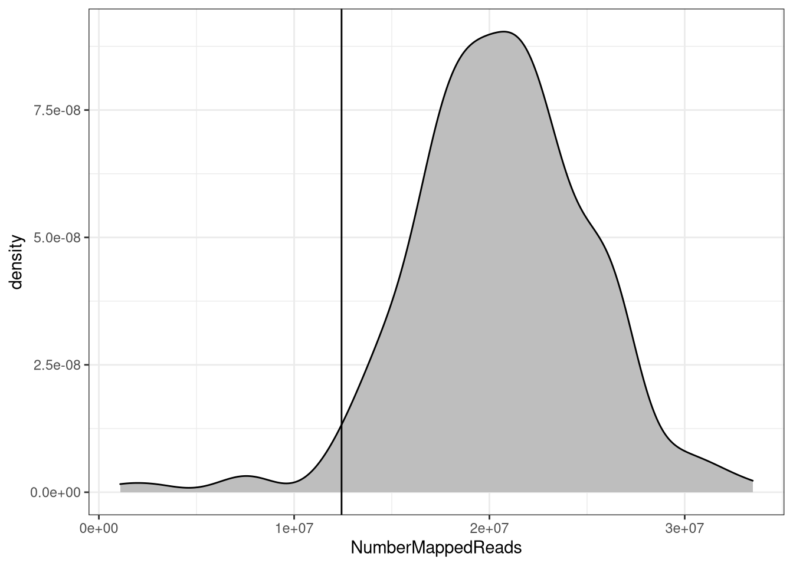
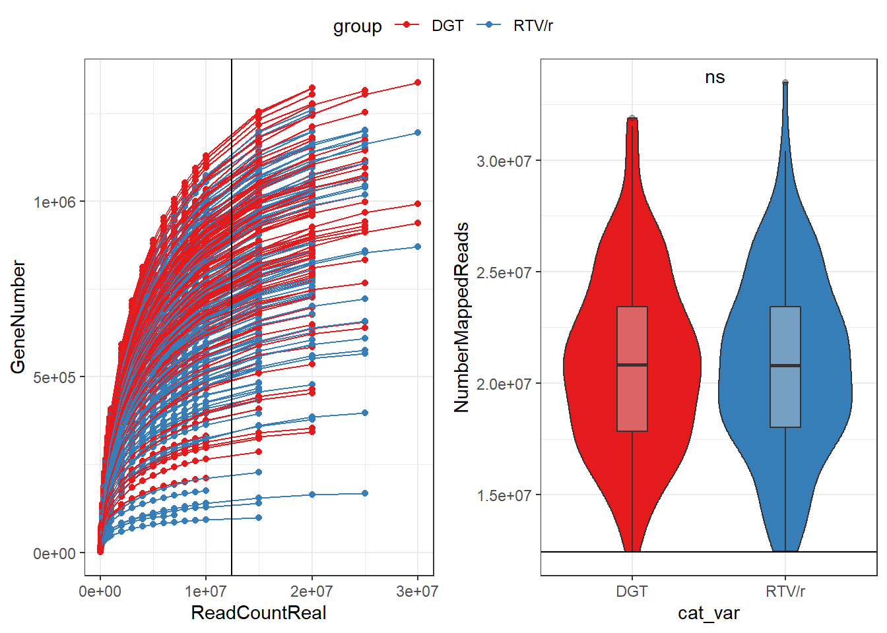
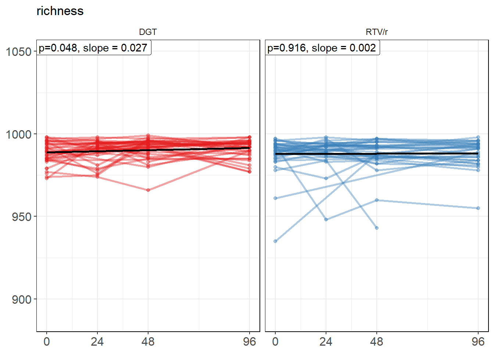
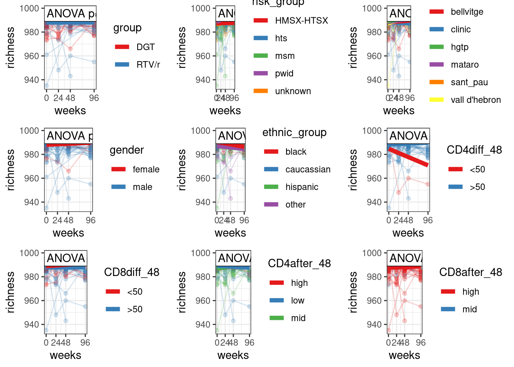

Last updated: 2022-03-08
Checks: 6 1
Knit directory: advanz4/
This reproducible R Markdown analysis was created with workflowr (version 1.6.2). The Checks tab describes the reproducibility checks that were applied when the results were created. The Past versions tab lists the development history.
The R Markdown file has unstaged changes. To know which version of the R Markdown file created these results, you’ll want to first commit it to the Git repo. If you’re still working on the analysis, you can ignore this warning. When you’re finished, you can run wflow_publish to commit the R Markdown file and build the HTML.
Great job! The global environment was empty. Objects defined in the global environment can affect the analysis in your R Markdown file in unknown ways. For reproduciblity it’s best to always run the code in an empty environment.
The command set.seed(20211203) was run prior to running the code in the R Markdown file. Setting a seed ensures that any results that rely on randomness, e.g. subsampling or permutations, are reproducible.
Great job! Recording the operating system, R version, and package versions is critical for reproducibility.
Nice! There were no cached chunks for this analysis, so you can be confident that you successfully produced the results during this run.
Great job! Using relative paths to the files within your workflowr project makes it easier to run your code on other machines.
Great! You are using Git for version control. Tracking code development and connecting the code version to the results is critical for reproducibility.
The results in this page were generated with repository version 36cd56f. See the Past versions tab to see a history of the changes made to the R Markdown and HTML files.
Note that you need to be careful to ensure that all relevant files for the analysis have been committed to Git prior to generating the results (you can use wflow_publish or wflow_git_commit). workflowr only checks the R Markdown file, but you know if there are other scripts or data files that it depends on. Below is the status of the Git repository when the results were generated:
Ignored files:
Ignored: .RData
Ignored: .Rhistory
Ignored: .Rproj.user/
Ignored: data/mre.rds
Untracked files:
Untracked: analysis/figure/
Unstaged changes:
Modified: analysis/02_IGC_analysis.Rmd
Note that any generated files, e.g. HTML, png, CSS, etc., are not included in this status report because it is ok for generated content to have uncommitted changes.
These are the previous versions of the repository in which changes were made to the R Markdown (analysis/02_IGC_analysis.Rmd) and HTML (docs/02_IGC_analysis.html) files. If you’ve configured a remote Git repository (see ?wflow_git_remote), click on the hyperlinks in the table below to view the files as they were in that past version.
| File | Version | Author | Date | Message |
|---|---|---|---|---|
| Rmd | f3ea9a7 | cblazquez | 2022-03-01 | Added new variables to Metadata |

# A tibble: 6 x 2
# Groups: SampleID [6]
SampleID maxReads
<chr> <int>
1 ADZ4_10 7776704
2 ADZ4_13 2898640
3 ADZ4_156 8026491
4 ADZ4_159 11529099
5 ADZ4_226 6650277
6 ADZ4_3 1091122 Min. 1st Qu. Median Mean 3rd Qu. Max.
1091122 17861766 20789049 20683233 23454591 33484742 only 6 samples have been discarded by low read count. The threshold used for filtering was the 2nd percentile, which equals 12428123 reads.
We’ll control first for the effect of sequencing depth over Gene richness and try to stablish a proper rarefaction threshold.

We’ll control first for the effect of sequencing depth over Gene richness and try to stablish a proper rarefaction threshold.
Data shows there is no bias created by sequencing depth between groups, and a threshold over the 2nd percentile is appropiate.
We’ll start studying the longitudinal effect of treatment group over gene richness. For such purpose, we’ll use Linear mixed models using patients as random effect and an interaction of treatment group and time as fixed effects with the following lme4 formula:
richness ~ group*time_point + (1|ID)

There is a pretty clear evolution in every one of the treatment groups. However the evolution rate seems pretty similar between both treatment groups. The models fail to find a great difference in gene richness evolution, althougha slight yet significant increasing trend (slope value = 0.027), can be found in the DGT group (Group 1).
However, creating a single LMM with treatment group as a random effect we can measure the actual difference in the effect of timepoint over gene richness between two groups.

| Estimate | Std. Error | df | t value | Pr(>|t|) | |
|---|---|---|---|---|---|
| (Intercept) | 988.8695916 | 1.1274910 | 197.8885 | 877.0531670 | 0.0000000 |
| long_var | 0.0269940 | 0.0170043 | 201.5997 | 1.5874797 | 0.1139712 |
| cat_varRTV/r | -0.8538164 | 1.6204602 | 196.9098 | -0.5268975 | 0.5988579 |
| long_var:cat_varRTV/r | -0.0248186 | 0.0246167 | 200.4380 | -1.0082016 | 0.3145732 |
This shows a slight effect of treatment, where the effect of time over richness in group group2 is 0.025 (St.err = 0.025) times lower than the same for group 1 (ANOVA p=0.31)
sessionInfo()R version 4.0.2 (2020-06-22)
Platform: x86_64-w64-mingw32/x64 (64-bit)
Running under: Windows 10 x64 (build 22000)
Matrix products: default
locale:
[1] LC_COLLATE=Spanish_Spain.1252 LC_CTYPE=Spanish_Spain.1252
[3] LC_MONETARY=Spanish_Spain.1252 LC_NUMERIC=C
[5] LC_TIME=Spanish_Spain.1252
attached base packages:
[1] stats graphics grDevices utils datasets methods base
other attached packages:
[1] nlme_3.1-148 lmerTest_3.1-3 lme4_1.1-27.1 Matrix_1.2-18
[5] rstatix_0.7.0 ggpubr_0.4.0 RColorBrewer_1.1-2 forcats_0.5.1
[9] stringr_1.4.0 dplyr_1.0.7 purrr_0.3.4 readr_2.0.1
[13] tidyr_1.1.4 tibble_3.1.6 ggplot2_3.3.5 tidyverse_1.3.1
[17] metar_0.1.4
loaded via a namespace (and not attached):
[1] readxl_1.3.1 backports_1.4.1 blme_1.0-5
[4] workflowr_1.6.2 systemfonts_1.0.2 plyr_1.8.6
[7] igraph_1.2.9 splines_4.0.2 digest_0.6.29
[10] foreach_1.5.1 htmltools_0.5.2 fansi_0.5.0
[13] magrittr_2.0.1 cluster_2.1.0 tzdb_0.2.0
[16] Biostrings_2.58.0 modelr_0.1.8 svglite_2.0.0
[19] colorspace_2.0-2 rvest_1.0.1 haven_2.3.1
[22] xfun_0.28 crayon_1.4.2 jsonlite_1.7.2
[25] survival_3.1-12 iterators_1.0.13 ape_5.5
[28] glue_1.5.1 kableExtra_1.3.4 gtable_0.3.0
[31] zlibbioc_1.36.0 XVector_0.30.0 webshot_0.5.2
[34] phyloseq_1.34.0 car_3.0-12 Rhdf5lib_1.12.1
[37] BiocGenerics_0.36.1 abind_1.4-5 scales_1.1.1
[40] mvtnorm_1.1-2 DBI_1.1.1 Rcpp_1.0.7
[43] viridisLite_0.4.0 xtable_1.8-4 merTools_0.5.2
[46] stats4_4.0.2 htmlwidgets_1.5.4 httr_1.4.2
[49] ellipsis_0.3.2 DataExplorer_0.8.2 pkgconfig_2.0.3
[52] farver_2.1.0 sass_0.4.0 dbplyr_2.1.1
[55] utf8_1.2.2 here_1.0.1 tidyselect_1.1.1
[58] labeling_0.4.2 rlang_0.4.11 reshape2_1.4.4
[61] later_1.3.0 munsell_0.5.0 cellranger_1.1.0
[64] tools_4.0.2 cli_3.0.1 generics_0.1.1
[67] selbal_0.1.0 ade4_1.7-18 broom_0.7.10
[70] evaluate_0.14 biomformat_1.18.0 fastmap_1.1.0
[73] arm_1.12-2 yaml_2.2.1 knitr_1.36
[76] fs_1.5.0 whisker_0.4 mime_0.11
[79] xml2_1.3.2 compiler_4.0.2 rstudioapi_0.13
[82] ggsignif_0.6.3 reprex_2.0.1 bslib_0.3.1
[85] stringi_1.7.6 highr_0.9 logger_0.2.2
[88] lattice_0.20-41 nloptr_1.2.2.3 vegan_2.5-7
[91] permute_0.9-5 multtest_2.46.0 vctrs_0.3.8
[94] pillar_1.6.4 lifecycle_1.0.1 networkD3_0.4
[97] rhdf5filters_1.2.1 jquerylib_0.1.4 data.table_1.14.2
[100] cowplot_1.1.1 httpuv_1.6.3 R6_2.5.1
[103] promises_1.2.0.1 gridExtra_2.3 IRanges_2.24.1
[106] codetools_0.2-16 boot_1.3-25 MASS_7.3-51.6
[109] assertthat_0.2.1 rhdf5_2.34.0 rprojroot_2.0.2
[112] withr_2.4.3 S4Vectors_0.28.1 broom.mixed_0.2.7
[115] mgcv_1.8-31 parallel_4.0.2 hms_1.1.1
[118] grid_4.0.2 coda_0.19-4 minqa_1.2.4
[121] rmarkdown_2.11 carData_3.0-4 git2r_0.28.0
[124] numDeriv_2016.8-1.1 Biobase_2.50.0 shiny_1.7.1
[127] lubridate_1.8.0